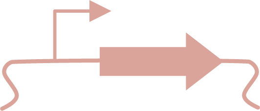
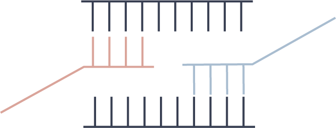
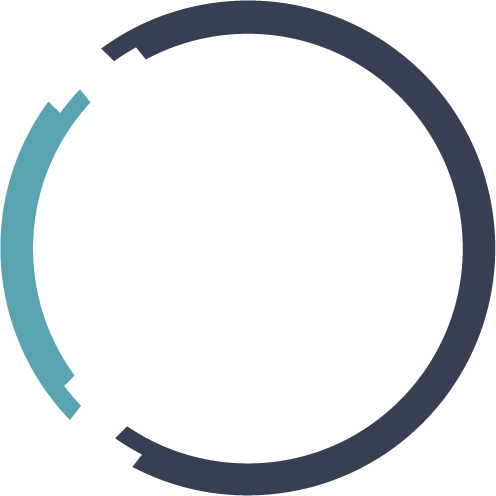

Cloning modules
Self-contained lessons on building DNA constructs, from designing primers to confirming a sequence. Each module can be used on its own or as part of a course.
These materials were developed in the Kunjapur Lab. Interested in using a module? Join the Virtual Cloning Lab to gain access to all materials on Benchling by submitting this interest form!

Primer design + sequencing
Open module
Assembly and transformation
Open moduleMutagenesis and verification
Open moduleMentoring and outreach
2025–present
Vice President of Outreach, Student and Postdoc Association
Manage a team of chairs who prepare panels and programs to increase undergraduate engagement in engineering biology.
2023–present
EMUMS Program Chair
Organize a mentorship program for undergraduate and Master’s students within EBRC.
2022–present
EMUMS Mentor
Developed a website for undergraduate students to learn about synthetic biology.